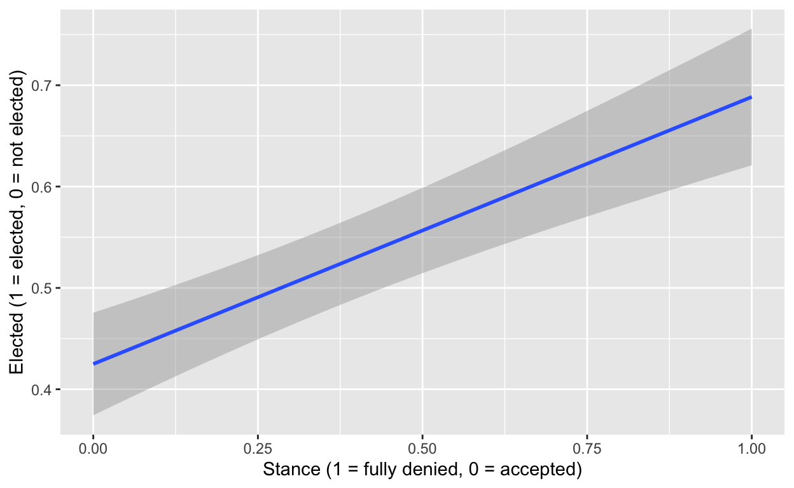

Introduction
The research question I have set out to answer is whether or not the stance a Republican candidates takes on the results of the 2020 presidential election are related to their electoral success in the 2022 general elections. In other words, is there a statistically significant difference in the proportion of elected Republican candidates based on whether they denied or accepted the results of the 2020 presidential election. My hypothesis is that there is a statistically significant difference in the proportion of Republican candidates that are elected based on their stance on the results of the 2020 presidential election.
After the 2022 general election, numerous news articles and political pundits talked about the role of denying or accepting the results of the 2020 presidential election on electoral success of a candidate. This question is interesting because the answer to this question could shed light on potential warnings for democracy. If denying the results of the 2020 presidential election turns out to be an influencing factor in electoral success it could encourage future candidates to reject results of fair elections, thereby threatening democracy as it increases misinformation and polarization.
Data Section
I obtained most of the data in my imported data set from FiveThirtyEight’s Github repository (https://github.com/fivethirtyeight/data/tree/master/election-deniers). The key dependent and independent variables I will look at are ‘Won or Lost their Race’ and ‘Stance’. The independent variable is the stance a Republican candidate takes on the 2020 presidential election results. Those stances include “Fully denied”, “Raised questions”, “Accepted with reservations”, “Fully accepted”, “Avoided answering”, and “No comment” which are all self-explanatory. FiveThirtyEight includes the sources for the stances of candidates in the Source variable. This variable is measured through the public responses of these candidates, their actions, and their lack of response to FiveThirtyEight’s survey on their stances. I end up making this a binary variable by condensing these stances into two: Denied or Accepted the results of the 2020 presidential elections for my statistical analysis but I do recognize this is not ideal.
The key dependent variable is ‘Won or Lost their Race’ and I manually did the research for all 500+ candidates with Ballotpedia. I looked up whether each candidate in the data set was elected or not in the 2022 general elections. I also did the same for ‘Dem or Rep State’ is measured with by what president the state went for in the 2020 presidential election. I used CNN’s 2020 presidential results (https://www.cnn.com/election/2020/results/president) to find out what president each state went for in 2020. I also added ‘The FiveThirtyEight partisan lean of every state’ (https://fivethirtyeight.com/features/how-red-or-blue-is-your-state-your-congressional-district/#) as a variable to this data set and it is a continuous variable, with negative values indicating a democratic lean, the smaller the number the greater democratic leaning the state has. Positive values indicated a republican lean with greater numbers indicating a stronger republican lean. I added these variables manually because at the beginning I thought they would be useful for my analysis.
This study is an observational study because a treatment was not administered, nor was a control group established. I ran a 2 sample permutation test to find whether the difference in proportion of elected Republican candidates was statistically significant based on their stance on the results of the 2020 election.
#Making the Data Set Neater by Renaming Variables
election_data <- election_data |>
mutate(
President = `Dem or Rep State`,
Elected_or_not = `Won or Lost their Race`,
State_partisan_lean = `The FiveThirtyEight partisan lean of every state`,
Stance = election_data$Stance
)
#I did not print out the election_data tibble with the knitr::kable format because it is over 500+ rows
election_data# A tibble: 552 × 15
Candidate Incumbent State Office District Stance Source URL Note
<chr> <chr> <chr> <chr> <chr> <chr> <chr> <chr> <chr>
1 Katie Br… No Alab… Senat… N/A Fully… NBC N… http… <NA>
2 Jerry Ca… Yes Alab… Repre… 1 Fully… Congr… http… <NA>
3 Barry Mo… Yes Alab… Repre… 2 Fully… Congr… http… <NA>
4 Mike Rog… Yes Alab… Repre… 3 Fully… Congr… http… <NA>
5 Robert A… Yes Alab… Repre… 4 Fully… Congr… http… <NA>
6 Dale Str… No Alab… Repre… 5 Fully… Faceb… http… <NA>
7 Gary Pal… Yes Alab… Repre… 6 Fully… Congr… http… <NA>
8 Beatrice… No Alab… Repre… 7 Raise… Email… <NA> <NA>
9 Kay Ivey Yes Alab… Gover… N/A Fully… Kay I… http… <NA>
10 Steve Ma… Yes Alab… Attor… N/A Accep… HuffP… http… <NA>
# ℹ 542 more rows
# ℹ 6 more variables: `Won or Lost their Race` <chr>,
# `Dem or Rep State` <chr>,
# `The FiveThirtyEight partisan lean of every state` <dbl>,
# President <chr>, Elected_or_not <chr>, State_partisan_lean <dbl>#Data Section Graphs: Summarizing the Dependent Variable
#Contingency table
contingency_table <- table(election_data$Stance, election_data$Elected_or_not)
knitr::kable(contingency_table)| Elected | Not Elected | |
|---|---|---|
| Accepted with reservations | 58 | 35 |
| Avoided answering | 4 | 14 |
| Fully accepted | 44 | 33 |
| Fully denied | 137 | 62 |
| No comment | 21 | 83 |
| Raised questions | 23 | 38 |
#Mosaic chart
mosaic_chart <- election_data |>
mutate(stance = if_else(Stance == "Fully denied", "Denied", "Accepted")) |>
ggplot(aes(x = Elected_or_not, fill = stance)) +
geom_bar(position = "fill") +
coord_flip() +
labs(title = "Electoral Success by Stance",
x = "Electoral Success",
y = "Proportion",
fill = "Stance") +
scale_fill_manual(values = c("Denied" = "indianred", "Accepted" = "dodgerblue"))
mosaic_chart
The results from the mosaic bar charts show a difference in the proportion of Republican election deniers candidates that were elected and not elected. In the elected category, there is a higher proportion of election deniers than in the not elected category which raises concerning signs.
2-sample permutation test
I ran a 2-sample permutation test in the chunk below to compare the proportion of Republican candidates in the 2022 general elections who denied versus accepted the results of the 2020 election and their electoral success in the 2022 general election. For the purpose of simplifying the categorical variable Stance, I made it a binary variable where if candidates fully denied they were categorized as having denied the results of the 2020 election and every other option was considered accepting because these candidates did not take action to mark the election as illegitimate even if they might have raised concerns, they overall accepted the results or at the very least did not act in a way or indicate that they would act in a way that would prevent the certification of valid election results.
#Hypothesis Test (2 Sample Permutation Test with Infer)
set.seed(02138)
#I created election_prop to find the proportion of Republican candidates elected based on their stance (Denied or Accepted) on the results of the 2020 presidential election.
election_prop <- election_data |>
mutate(partisan_leaning = if_else(State_partisan_lean >= 0, "Conservative Leaning", "Liberal Leaning"),
elected = if_else(Elected_or_not == "Elected", 1, 0),
stance = if_else(Stance == "Fully denied", "Denied", "Accepted")) |>
group_by(stance) |>
summarise(elected_prop = mean(elected))
knitr::kable(election_prop, col.names = c("Stance", "Prop. of Rep. Candidates Elected"))| Stance | Prop. of Rep. Candidates Elected |
|---|---|
| Accepted | 0.4249292 |
| Denied | 0.6884422 |
#I created election_data_modified to calculate the difference in proportions of elected candidates between the Denied and Accepted stances.
election_data_modified <- election_data |>
mutate(partisan_leaning = if_else(State_partisan_lean >= 0, "Conservative Leaning", "Liberal Leaning"),
elected = if_else(Elected_or_not == "Elected", "1", "0"),
stance = if_else(Stance == "Fully denied", "Denied", "Accepted")) |>
specify(elected ~ stance, success = "1") |>
calculate(stat = "diff in props", order = c("Denied", "Accepted"))
knitr::kable(election_data_modified, col.names = c("Difference in Proportion of Electeds by Stance (Denied prop. - Accepted Prop.)"))| Difference in Proportion of Electeds by Stance (Denied prop. - Accepted Prop.) |
|---|
| 0.263513 |
#Set up my hypothesis
set_hypothesis <- election_data |>
mutate(elected = if_else(Elected_or_not == "Elected", "1", "0"),
stance = if_else(Stance == "Fully denied", "Denied", "Accepted")) |>
specify(elected ~ stance, success = "1") |>
hypothesize(null = "independence")
#null distribution of the difference in proportions
null_dist <- set_hypothesis |>
specify(elected ~ stance, success = "1") |>
hypothesize(null = "independence") |>
generate(reps = 1000, type = "permute") |>
calculate(stat = "diff in props", order = c("Denied", "Accepted"))
null_dist |>
visualize() +
labs(
x = "Diff. in Prop.",
y = "Count",
title = "Simulation-Based Null Distribution of Diff. in Prop."
)-1.png)
pval <- null_dist |>
get_p_value(obs_stat = election_data_modified, direction = "both")
knitr::kable(pval, col.names = "P-value")| P-value |
|---|
| 0 |
Results
The observed difference in proportion of elected Republican candidates is 0.263513 (denied election - accepted election). The p-value is approximately 0, indicating that the observed difference is statistically significant. Since the p-value is less than alpha = 0.05, there is evidence to reject the null hypothesis that there is no observed difference. It suggests that there is a significant difference in the proportion of elected candidates between the Denied and Accepted stances. However, there are so many confounding variables that could explain this difference in proportion and that’s why I run a linear regression in the next step of analysis.
Linear Regression
In the chunk below, I ran a regression and modeled it with ggplot. Due to the fact that my dependent and independent variable are categorical, I have coded them to be numerical with the mutate function which results in categorical binary independent and dependent variables. 1 for elected, 0 for not elected, 1 for fully denied the election results of 2020 and 0 for accepted the results of the 2020 election. To control for other confounding independent variables in my data set such as the state, incumbency status, office, and what president the state went for in 2020 I added them as variables in my regression model.
regression <- election_data |>
mutate(elected = if_else(Elected_or_not == "Elected", 1, 0),
stance = if_else(Stance == "Fully denied", 1, 0),
state = State,
incumbency = Incumbent,
office = Office
)
regression_fit <- lm(elected ~ stance + President + incumbency + office + state, regression)
summary(regression_fit)
Call:
lm(formula = elected ~ stance + President + incumbency + office +
state, data = regression)
Residuals:
Min 1Q Median 3Q Max
-0.97151 -0.15530 -0.03799 0.06088 0.91462
Coefficients: (1 not defined because of singularities)
Estimate Std. Error t value Pr(>|t|)
(Intercept) 0.295902 0.099071 2.987 0.00296 **
stance 0.032390 0.029564 1.096 0.27378
PresidentTrump 0.220995 0.121687 1.816 0.06996 .
incumbencyYes 0.666753 0.030145 22.118 < 2e-16 ***
officeGovernor -0.079676 0.073424 -1.085 0.27838
officeRepresentative -0.068645 0.057993 -1.184 0.23711
officeSecretary of state -0.020514 0.078650 -0.261 0.79433
officeSenator -0.031552 0.073979 -0.427 0.66993
stateAlaska -0.334062 0.158238 -2.111 0.03526 *
stateArizona -0.004285 0.116915 -0.037 0.97078
stateArkansas 0.029780 0.136182 0.219 0.82699
stateCalifornia -0.129939 0.094336 -1.377 0.16901
stateColorado -0.166645 0.118708 -1.404 0.16100
stateConnecticut -0.243128 0.128946 -1.885 0.05995 .
stateDelaware -0.261579 0.223376 -1.171 0.24215
stateFlorida -0.137878 0.102345 -1.347 0.17853
stateGeorgia 0.046660 0.108245 0.431 0.66661
stateHawaii -0.233772 0.168874 -1.384 0.16689
stateIdaho 0.067245 0.147748 0.455 0.64921
stateIllinois -0.189270 0.106658 -1.775 0.07659 .
stateIndiana -0.007390 0.125065 -0.059 0.95290
stateIowa 0.033829 0.136723 0.247 0.80468
stateKansas -0.149022 0.135056 -1.103 0.27038
stateKentucky -0.172538 0.142096 -1.214 0.22524
stateLouisiana -0.186419 0.140929 -1.323 0.18652
stateMaine -0.223580 0.188634 -1.185 0.23648
stateMaryland -0.217350 0.121932 -1.783 0.07527 .
stateMassachusetts -0.245704 0.122116 -2.012 0.04475 *
stateMichigan -0.141873 0.111125 -1.277 0.20231
stateMinnesota -0.121578 0.121340 -1.002 0.31685
stateMississippi -0.047823 0.170088 -0.281 0.77870
stateMissouri 0.014674 0.131222 0.112 0.91100
stateMontana 0.202177 0.223567 0.904 0.36626
stateNebraska 0.089622 0.149108 0.601 0.54808
stateNevada -0.094651 0.133213 -0.711 0.47771
stateNew Hampshire -0.158558 0.168294 -0.942 0.34657
stateNew Jersey -0.091081 0.119656 -0.761 0.44690
stateNew Mexico -0.366803 0.145708 -2.517 0.01214 *
stateNew York 0.071867 0.101640 0.707 0.47986
stateNorth Carolina -0.199208 0.116170 -1.715 0.08701 .
stateNorth Dakota 0.013216 0.171777 0.077 0.93870
stateOhio -0.185355 0.110826 -1.672 0.09506 .
stateOklahoma 0.071008 0.130726 0.543 0.58725
stateOregon -0.071956 0.133206 -0.540 0.58931
statePennsylvania -0.098590 0.108686 -0.907 0.36479
stateRhode Island -0.248406 0.155695 -1.595 0.11125
stateSouth Carolina -0.115339 0.124029 -0.930 0.35286
stateSouth Dakota 0.123129 0.158422 0.777 0.43740
stateTennessee -0.106463 0.127232 -0.837 0.40313
stateTexas -0.175890 0.099567 -1.767 0.07792 .
stateUtah -0.135380 0.157687 -0.859 0.39101
stateVermont 0.004347 0.155386 0.028 0.97769
stateVirginia -0.024001 0.121761 -0.197 0.84382
stateWashington -0.178872 0.121933 -1.467 0.14302
stateWest Virginia -0.147395 0.223626 -0.659 0.51013
stateWisconsin NA NA NA NA
stateWyoming 0.295537 0.190318 1.553 0.12109
---
Signif. codes: 0 '***' 0.001 '**' 0.01 '*' 0.05 '.' 0.1 ' ' 1
Residual standard error: 0.2902 on 496 degrees of freedom
Multiple R-squared: 0.6969, Adjusted R-squared: 0.6632
F-statistic: 20.73 on 55 and 496 DF, p-value: < 2.2e-16p_value <- tidy(regression_fit)$p.value
p_value [1] 2.958899e-03 2.737808e-01 6.996043e-02 6.171484e-76 2.783818e-01
[6] 2.371096e-01 7.943323e-01 6.699271e-01 3.526083e-02 9.707800e-01
[11] 8.269909e-01 1.690060e-01 1.609989e-01 5.994744e-02 2.421500e-01
[16] 1.785338e-01 6.666117e-01 1.668893e-01 6.492144e-01 7.658507e-02
[21] 9.529047e-01 8.046813e-01 2.703847e-01 2.252355e-01 1.865153e-01
[26] 2.364837e-01 7.527159e-02 4.475461e-02 2.023078e-01 3.168491e-01
[31] 7.786986e-01 9.110048e-01 3.662632e-01 5.480788e-01 4.777140e-01
[36] 3.465749e-01 4.469012e-01 1.213709e-02 4.798562e-01 8.700675e-02
[41] 9.387030e-01 9.505986e-02 5.872471e-01 5.893113e-01 3.647937e-01
[46] 1.112467e-01 3.528562e-01 4.373971e-01 4.031269e-01 7.791839e-02
[51] 3.910119e-01 9.776929e-01 8.438194e-01 1.430160e-01 5.101276e-01
[56] NA 1.210948e-01modelsummary::modelsummary(summary(regression_fit),
statistic = c("s.e. = {std.error}",
"p = {p.value}"),
gof_map = c("nobs", "r.squared", "adj.r.squared"))| (1) | |
|---|---|
| (Intercept) | 0.296 |
| s.e. = 0.099 | |
| p = 0.003 | |
| stance | 0.032 |
| s.e. = 0.030 | |
| p = 0.274 | |
| PresidentTrump | 0.221 |
| s.e. = 0.122 | |
| p = 0.070 | |
| incumbencyYes | 0.667 |
| s.e. = 0.030 | |
| p = <0.001 | |
| officeGovernor | −0.080 |
| s.e. = 0.073 | |
| p = 0.278 | |
| officeRepresentative | −0.069 |
| s.e. = 0.058 | |
| p = 0.237 | |
| officeSecretary of state | −0.021 |
| s.e. = 0.079 | |
| p = 0.794 | |
| officeSenator | −0.032 |
| s.e. = 0.074 | |
| p = 0.670 | |
| stateAlaska | −0.334 |
| s.e. = 0.158 | |
| p = 0.035 | |
| stateArizona | −0.004 |
| s.e. = 0.117 | |
| p = 0.971 | |
| stateArkansas | 0.030 |
| s.e. = 0.136 | |
| p = 0.827 | |
| stateCalifornia | −0.130 |
| s.e. = 0.094 | |
| p = 0.169 | |
| stateColorado | −0.167 |
| s.e. = 0.119 | |
| p = 0.161 | |
| stateConnecticut | −0.243 |
| s.e. = 0.129 | |
| p = 0.060 | |
| stateDelaware | −0.262 |
| s.e. = 0.223 | |
| p = 0.242 | |
| stateFlorida | −0.138 |
| s.e. = 0.102 | |
| p = 0.179 | |
| stateGeorgia | 0.047 |
| s.e. = 0.108 | |
| p = 0.667 | |
| stateHawaii | −0.234 |
| s.e. = 0.169 | |
| p = 0.167 | |
| stateIdaho | 0.067 |
| s.e. = 0.148 | |
| p = 0.649 | |
| stateIllinois | −0.189 |
| s.e. = 0.107 | |
| p = 0.077 | |
| stateIndiana | −0.007 |
| s.e. = 0.125 | |
| p = 0.953 | |
| stateIowa | 0.034 |
| s.e. = 0.137 | |
| p = 0.805 | |
| stateKansas | −0.149 |
| s.e. = 0.135 | |
| p = 0.270 | |
| stateKentucky | −0.173 |
| s.e. = 0.142 | |
| p = 0.225 | |
| stateLouisiana | −0.186 |
| s.e. = 0.141 | |
| p = 0.187 | |
| stateMaine | −0.224 |
| s.e. = 0.189 | |
| p = 0.236 | |
| stateMaryland | −0.217 |
| s.e. = 0.122 | |
| p = 0.075 | |
| stateMassachusetts | −0.246 |
| s.e. = 0.122 | |
| p = 0.045 | |
| stateMichigan | −0.142 |
| s.e. = 0.111 | |
| p = 0.202 | |
| stateMinnesota | −0.122 |
| s.e. = 0.121 | |
| p = 0.317 | |
| stateMississippi | −0.048 |
| s.e. = 0.170 | |
| p = 0.779 | |
| stateMissouri | 0.015 |
| s.e. = 0.131 | |
| p = 0.911 | |
| stateMontana | 0.202 |
| s.e. = 0.224 | |
| p = 0.366 | |
| stateNebraska | 0.090 |
| s.e. = 0.149 | |
| p = 0.548 | |
| stateNevada | −0.095 |
| s.e. = 0.133 | |
| p = 0.478 | |
| stateNew Hampshire | −0.159 |
| s.e. = 0.168 | |
| p = 0.347 | |
| stateNew Jersey | −0.091 |
| s.e. = 0.120 | |
| p = 0.447 | |
| stateNew Mexico | −0.367 |
| s.e. = 0.146 | |
| p = 0.012 | |
| stateNew York | 0.072 |
| s.e. = 0.102 | |
| p = 0.480 | |
| stateNorth Carolina | −0.199 |
| s.e. = 0.116 | |
| p = 0.087 | |
| stateNorth Dakota | 0.013 |
| s.e. = 0.172 | |
| p = 0.939 | |
| stateOhio | −0.185 |
| s.e. = 0.111 | |
| p = 0.095 | |
| stateOklahoma | 0.071 |
| s.e. = 0.131 | |
| p = 0.587 | |
| stateOregon | −0.072 |
| s.e. = 0.133 | |
| p = 0.589 | |
| statePennsylvania | −0.099 |
| s.e. = 0.109 | |
| p = 0.365 | |
| stateRhode Island | −0.248 |
| s.e. = 0.156 | |
| p = 0.111 | |
| stateSouth Carolina | −0.115 |
| s.e. = 0.124 | |
| p = 0.353 | |
| stateSouth Dakota | 0.123 |
| s.e. = 0.158 | |
| p = 0.437 | |
| stateTennessee | −0.106 |
| s.e. = 0.127 | |
| p = 0.403 | |
| stateTexas | −0.176 |
| s.e. = 0.100 | |
| p = 0.078 | |
| stateUtah | −0.135 |
| s.e. = 0.158 | |
| p = 0.391 | |
| stateVermont | 0.004 |
| s.e. = 0.155 | |
| p = 0.978 | |
| stateVirginia | −0.024 |
| s.e. = 0.122 | |
| p = 0.844 | |
| stateWashington | −0.179 |
| s.e. = 0.122 | |
| p = 0.143 | |
| stateWest Virginia | −0.147 |
| s.e. = 0.224 | |
| p = 0.510 | |
| stateWyoming | 0.296 |
| s.e. = 0.190 | |
| p = 0.121 | |
| Num.Obs. | 552 |
| R2 | 0.697 |
| R2 Adj. | 0.663 |
regression_line <- ggplot(regression, mapping = aes(x = stance, y = elected)) + geom_smooth(method = "lm") +
labs(
x = "Stance (1 = fully denied, 0 = accepted)",
y = "Elected (1 = elected, 0 = not elected)"
)
regression_line
Results
To interpret the results of the linear regression, I will start by interpreting the intercept, 0.295902, this represents the proportion of percent change of having the outcome elected equals 1 or when the republican candidate is elected when all other predictors equal 0 is 29.6%.
The coefficient of stance is 0.032390. In context, it represents the proportion of percent change of being elected increases by 3.2% when stance increases by 1 which can only be stance = 1 due to the binary nature of this variable in this study. Therefore when a Republican candidate fully denies the election, the percent change of being elected increases by 3.2%.
The coefficient of PresidentTrump is 0.220995 which means that if the state went for President Trump in 2020, the the percent change of being elected increases by 22.1%.
The coefficient of incumbencyYes is 66.7% which means that if the candidate is an incumbent, the the percent change of being elected increases by 66.7%.
All 50 states have different coefficient values, but essentially the coefficient represents the increase or decrease in percent change of being elected in a specific state as a republican candidate. For example, the Illinois coefficient is -0.189270, which means that the percent change of being elected as a republican candidate in Illinois decreases by 18.9%%.
The coefficients for office have different coefficients based on the office but essentially represent the increase or decrease in percent change of being elected in a specific office as a republican candidate. For example the coefficient of the Senator office is -0.031552 which means that percent change of being elected as a senator as a republican candidate decreases by 3.1%.
After running the regression, I see that the p-value of stance whose coefficient is 0.032 is 0.27378 which is greater than the alpha = 0.05 significance level. In other words the estimated effect of the stance variable on the elected variable is not statistically significant. On the other hand the incumbencyYes variable had a coefficient 0.666753 which makes it statistically significant because its p-value is < 0.00000000000002 which is less than alpha = 0.05 significance level, essentially saying that the estimated effect of the incumbency variable on the elected variable is statistically significant. Those were the most significant and relevant findings pertaining to my research question.
Conclusion
The research question I have set out to answer is whether or not the stance a Republican candidates takes on the results of the 2020 presidential election are related to their electoral success in the 2022 general elections. My 2-sample permutation test provided statistically significant evidence to suggest that there is a statistically significant difference in the proportion of elected candidates between the Denied and Accepted stances. However, there are other confounding variables to which this statistical significance can be attributed to besides their stance on the results of the 2020 presidential election which is where the linear regression comes into play. There some interesting insights that resulted from the linear regression model but the takeaway is that the estimated effect of the stance variable on the elected variable is not statistically significant but I did find some statistical significance in the incumbency variable which is already a pretty well know fact that incumbents have an advantage in election outcomes.
Some of the limitations of my analysis is the lack of data on other confounding variables such as the sex, age, and education of the Republican political candidate. In addition, I had to group states by whether or not they went for Trump or Biden in the 2020 presidential election and that is not necessarily reflective of the stance of the entire state. There are some congressional districts within a state that vary in their partisan leanings. For example, Illinois went for Biden in the 2020 presidential election but counties in southern Illinois lean toward Republican candidates whereas the metropolitan Chicago area counties lean toward Democratic candidates. If I had more time and money, I would analyze the state/district partisan leaning in more detail, collect more data on the candidates such as their age, sex, education, etc., and stratify the stance of the Republican candidates into more than 2 categorical outcomes as I did in this investigation.
Bonus Data Visualizations
#Bonus Data Visualizations
election_data |>
mutate(stance = if_else(Stance == "Fully denied", "Denied", "Accepted")) |>
filter(stance == "Denied") |>
ggplot(aes(x = State_partisan_lean, y = Elected_or_not, fill = Elected_or_not)) +
geom_boxplot() +
labs(title = "Elecion Deniers: State Partisan Lean vs Election Outcome", x = "Elected or not", y = "State Partisan Lean")
election_data |>
mutate(stance = if_else(Stance == "Fully denied", "Denied", "Accepted")) |>
filter(stance == "Accepted") |>
ggplot(aes(x = State_partisan_lean, y = Elected_or_not, fill = Elected_or_not)) +
geom_boxplot() +
labs(title = "Elecion Acceptors: State Partisan Lean vs Election Outcome", x = "Elected or not", y = "State Partisan Lean")